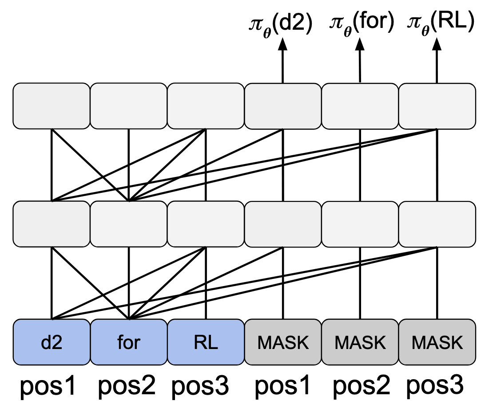
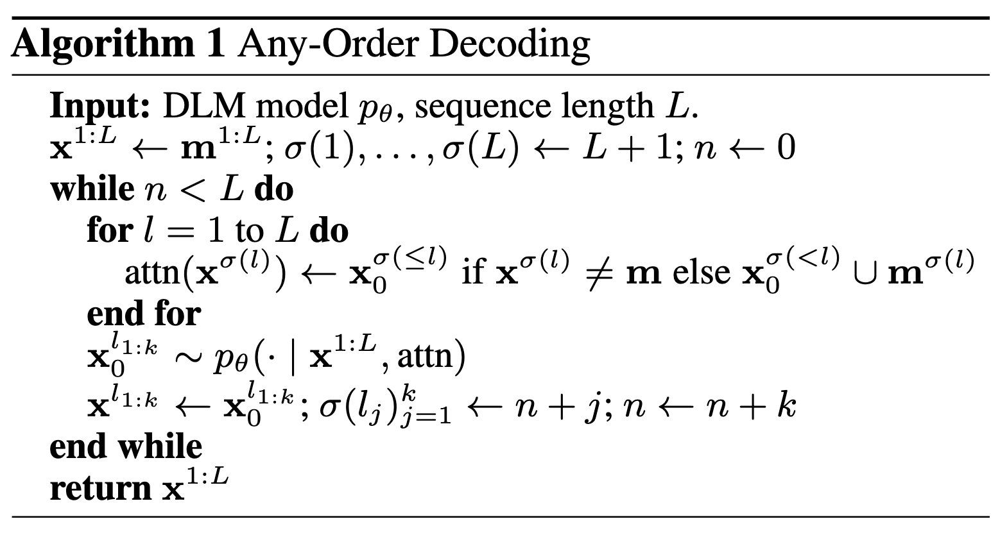
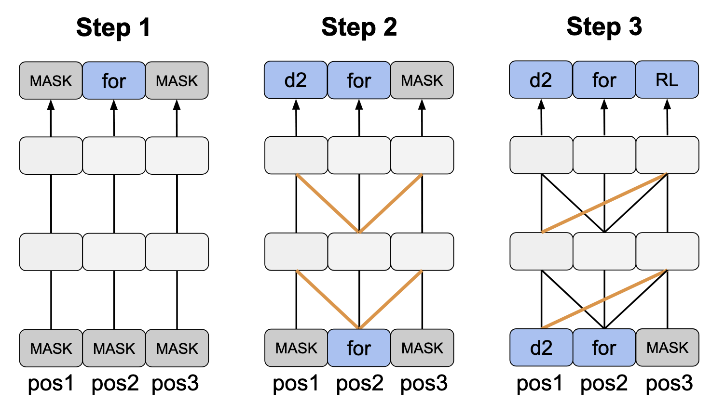

Any-order autoregressive models
In this section, we introduce
d2-AnyOrder, our trajectory likelihood estimator that can achieve unbiased trajectory
likelihood evaluation for masked DLMs with only one model pass. Since this estimator is inspired by the concept
of any-order autoregressive models (AO-ARMs), we first take a detour to introduce AO-ARMs.
The concept of AO-ARM is proposed in
Hoogeboom et al., 2021,
where they demonstrate that masked discrete diffusion models' training objective is equivalent to an any-order
autoregressive variant in the following form:
$$
\mathcal{L}_{\textnormal{AO-ARM}}=\mathbb{E}_{\sigma \sim U(S_D)}\Big[\sum_{l=1}^L \log p_\theta(\mathbf{x}_0^{\sigma(l)} \mid \mathbf{x}_0^{\sigma(< l)})\Big],
$$
where \(\sigma\) is a permutation of intergers \(1,\ldots,L\), and \(S_D\) is the set of all possible \(\sigma\).
d2-AnyOrder
Inspired by the concept of AO-ARM, we propose that the trajectory likelihood \(\pi(\mathbf{x}_{0:T}^{1:L})\) can be rewritten as
\(\prod_{l=1}^L\pi(\mathbf{x}_0^{\sigma(l)}\mid \mathbf{x}_0^{\sigma(\lt l)})\). Here, instead of a randomly sampled permutation,
\(\sigma\) records the decoding order of the sample tokens. In other words, \(\mathbf{x}_0^{\sigma(\lt l)}\) denotes the tokens
decoded before \(\mathbf{x}_0^l\).
Based on this alternative decomposition, we propose our efficient and
effective trajectory likelihood estimator, d2-AnyOrder. Concretely, given a clean sample token sequence
\(\mathbf{x}_0^{1:L}\), we construct a
\(2L\)-length sequence \(\mathbf{x}_0^{1:L} \oplus \mathbf{m}^{L+1:2L}\), where \(\oplus\) denotes concatenation along the sequence
dimension and \(\mathbf{m}^{L+1:2L}\) are masked tokens. We assign the positional encoding as \(pos_l = l \; \textnormal{mod} \; L\). We then define the attention mask so that
a clean token \(\mathbf{x}_0^{\sigma(l)}\) attends to \(\mathbf{x}_0^{\sigma(\leq l)}\), and a mask token \(\mathbf{m}^{L+\sigma(l)}\) attends to
\(\mathbf{x}_0^{\sigma(\lt l)} \cup \mathbf{m}^{L+\sigma(l)}\). We then use the output logits of position \(L+l\) as a proxy of the logits of token
\(\mathbf{x}_0^l\) at its decoding time step.

Illustration of d2-AnyOrder, our one-shot, unbiased trajectory likelihood estimator. We depict attention with query tokens (one layer
up) attending to keys / values (one layer below) via an undirected connected line. The output at each position is
depicted with a directed arrow. “pos” refers to positional encoding index. We use a
three token example where the decoding order is ”for→d2→RL”.
Denoting the resulting likelihood estimate as \(\pi^{\textnormal{AO}}(\mathbf{x}_0^l \mid \mathbf{x}_0^{1:L} \oplus \mathbf{m}^{L+1:2L})\), we
train the policy network with the following GRPO objective:
$$
\mathbb{E}_{\mathbf{x}_{0:T}^{1:L}\sim\pi_{\textnormal{old}}}\Big[\frac1L\sum_{l=1}^L\textnormal{min}\Big(\rho_{n,l}^{\textnormal{AO}}A^l, \textnormal{clip}(\rho_{n,l}^{\textnormal{AO}}, 1-\epsilon, 1+\epsilon)A^l\Big)+\beta D_{\textnormal{KL}}\Big(\pi_\theta(\mathbf{x}_{0:T}^{1:L} \mid \mathbf{q}) \Vert \pi_{\textnormal{ref}}(\mathbf{x}_{0:T}^{1:L}\mid \mathbf{q})\Big)\Big],
$$
where \(\rho_{n,l}^{\textnormal{AO}}=\frac{\pi_\theta^{\textnormal{AO}}(\mathbf{x}_0^l \mid \mathbf{x}_0^{1:L}\oplus \mathbf{m}^{L+1:2L}, \mathbf{q})}{\pi_{\textnormal{old}}^{\textnormal{AO}}(\mathbf{x}_0^l \mid \mathbf{x}_0^{1:L}\oplus\mathbf{m}^{L+1:2L}, \mathbf{q})}\). For simplicity, we will also call the RL algorithm induced by d2-AnyOrder
d2-AnyOrder in the remainder of this blog post.
When does the any-order estimator work?
Despite its simplicity, d2-AnyOrder does not yield unbiased trajectory likelihood evaluation for all masked DLMs naturally. In fact, d2-AnyOrder's unbiasedness is contingent on an assumption that
\(\pi^{\textnormal{AO}}(\mathbf{x}_0^l \mid \mathbf{x}_0^{1:L} \oplus \mathbf{m}^{L+1:2L})\) should equal the probability \(\pi(\mathbf{x}_0^{\sigma(l)} \mid \mathbf{x}_0^{\sigma(\lt l)})\)
of that token during sampling. Indeed, this property holds by construction when we sample from a masked DLM using a sampling algorithm called
any-order decoding.

Pseudocode of any-order decoding.
In any-order decoding, at each time step, we input a partially masked token sequence \(\mathbf{x}^{1:L}\) (\(\mathbf{x}^l\) could either be a clean token, i.e., \(\mathbf{x}_0^l\) or
a masked token, i.e., \(\mathbf{m}^l\)) into the model
and compute the logits at each masked position. Then \(k\) token positions are selected for unmasking based on certain heuristics, after
which unmasked tokens at selected positions are sampled and added to the token sequence. Notably, we set the attention mask of the transformer
parameterizing the DLM to satisfy the following two properties:
Independent masks. Mask tokens do not attend to each other: they attend only to unmasked tokens and themselves.
Order causality. Unmasked tokens attend only to tokens decoded at earlier time steps and to themselves.

Illustration of the any-order decoding algorithm for masked DLMs. This example follows the setting of the preivous figure, where three tokens are decoded in the order of "for→d2→RL".
At each time step, newly added attention relations in any-order decoding are highlighted with red line markers.
When does the any-order estimator not work?
Any-order decoding can be applied to any masked DLM, which always yields samples whose likelihood can afterwards be computed in a single forward pass.
Unfortunately, any-order decoding does not always produce high-quality samples. If the model was not trained with independent masks and order causality,
it may not produce good samples when these properties are introduced at inference time. We have empirically discovered that popular DLMs, such as LLaDA,
falls within this range of models (see evidence in our paper).